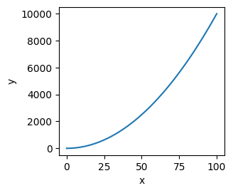

Tips to use Matplotlib#
Setting plot style#
Use *.mplstyle#
import matplotlib.pyplot as plt
plt.style.available
['Solarize_Light2',
'_classic_test_patch',
'_mpl-gallery',
'_mpl-gallery-nogrid',
'bmh',
'classic',
'dark_background',
'fast',
'fivethirtyeight',
'ggplot',
'grayscale',
'seaborn-v0_8',
'seaborn-v0_8-bright',
'seaborn-v0_8-colorblind',
'seaborn-v0_8-dark',
'seaborn-v0_8-dark-palette',
'seaborn-v0_8-darkgrid',
'seaborn-v0_8-deep',
'seaborn-v0_8-muted',
'seaborn-v0_8-notebook',
'seaborn-v0_8-paper',
'seaborn-v0_8-pastel',
'seaborn-v0_8-poster',
'seaborn-v0_8-talk',
'seaborn-v0_8-ticks',
'seaborn-v0_8-white',
'seaborn-v0_8-whitegrid',
'tableau-colorblind10']
plt.style.use(dark_background)
---------------------------------------------------------------------------
NameError Traceback (most recent call last)
Cell In[6], line 1
----> 1 plt.style.use(dark_background)
NameError: name 'dark_background' is not defined
Use rcParam#
Save image files#
Save single figure to single file#
import matplotlib.pyplot as plt
fig1, ax1 = plt.subplots()
fig1.savefig('test.pdf', dpi=300, bbox_inches='tight', pad_inches=0.05)
Save list of figures to a same file#
from matplotlib.backends.backend_pdf import PdfPages
import matplotlib.pyplot as plt
fig1, ax1 = plt.subplots()
fig2, ax2 = plt.subplots()
with PdfPages('test.pdf') as myPDF:
myPDF.savefig(fig1, dpi=300, bbox_inches='tight', pad_inches=0.05)
myPDF.savefig(fig2, dpi=300, bbox_inches='tight', pad_inches=0.05)
Set properties#
Set multiple properties at once#
use ax.set(), code reference
import numpy as np
import matplotlib.pyplot as plt
x = np.linspace(0, 100)
y = x**2
fig, ax = plt.subplots(1,1, figsize=(3, 2.7))
ax.plot(x,y)
ax.set(xlabel='x',
ylabel='y', )
plt.show()

Set each propertie, separately#
use ax.set_xlabel(), code reference
fig, ax = plt.subplots(1,1, figsize=(3, 2.7))
ax.plot(x,y)
ax.set_xlabel('x')
ax.set_ylabel('y')
plt.show()